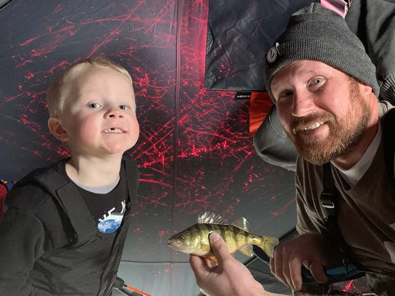

Target Audience
The target audience will mainly be outdoor enthusiasts who enjoy a variety of activities that can be affected by the weather. This will include summer and winter activities. As this site will feature specific cities in Idaho, it will focus on weather-related activities for those areas. Whether you’re a mountain biker hoping for a warm summer day, or an ice-fisherman hoping for freezing conditions we will have the latest weather forecasts and information available.
PERSONA 1
NAME: Joe Shmelly
AGE: 38
PURPOSE OF VISIT: Joe is a father of 4 and enjoys taking his children ice fishing. As his children are still young, he needs to watch weather forcasts carefully to make sure the ice will be thick enough and also so the weather isn't too stormy for his young children.
DEVICES USED: Joe will check the site both with his iPhone 7 when out in the field to monitor conditions, and also will use his home PC when planning trips.
PERSONA 2
NAME: Valerie Exhausted
AGE: 39
PURPOSE OF VISIT: Valerie is a mother of 5 very active children. She is constantly running her children to various activities. Often she has to leave the children at one activety while running to another. In the spring when baseball and soccer games sometimes get "rained out", she is left wondering right up till the time of the game if her child will play or not. She is looking for help in getting advanced notice on weather related incidents in her area that could affect her scheduling.
DEVICES USED: Valerie will mainly check the site on her phone.
SCENARIO 1
How far out does the site forecast?
Our goal is to give accurate current weather conditions and provide a accurate forecast allowing for you to plan your activities later in the week.
SCENARIO 2
Is there going to be a storm that will cancel my children's games?
Our daily forecasts are reliable and will help you know if your children's games will suffer from a storm delay or cancellation.
SCENARIO 3
Will the temperature stay below freezing?
Four our winter friends, we plan on giving current and daily anticipated high and low temperatures. This will help you plan if the snow or ice conditions will be favorable to your activities.
SCENARIO 4
How accurate is the weather forcast for the area I live in?
We have several weather stations throughout the Idaho area. The accuracy varies by the distance you are from our station. We hope to grow and add more stations providing for greater accuracy.
SCENARIO 5
What clothing should I wear for my activities today?
With current and daily forecasts, we will help you plan your day. Return often on your mobile device for updated information.